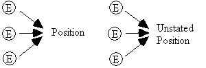

All coherent writing has a superstructure or blueprint. When writing, we don’t just randomly jot down our thoughts; we organize our ideas and present them in a logical manner. For instance, we may present evidence that builds up to a conclusion but intentionally leave the conclusion unstated, or we may present a position and then contrast it with an opposing position, or we may draw an extended analogy.
There is an endless number of writing techniques that authors use to present their ideas, so we cannot classify every method. However, some techniques are very common to the type of explanatory or opinionated writing found in GRE passages.
A. Compare and contrast two positions.
This technique has a number of variations, but the most common and direct is to develop two ideas or systems (comparing) and then point out why one is better than the other (contrasting).
Some common tip-off phrases to this method of analysis are
By contrast
Similarly
Some typical questions for these types of passages are
According to the passage, a central distinction between a woman’s presence and a man’s presence is:
In which of the following ways does the author imply that birds and reptiles are similar?
Writing-technique questions are similar to main idea questions; except that they ask about how the author presents his ideas, not about the ideas themselves. Generally, you will be given only two writing methods to choose from, but each method will have two or more variations.
Read the passage slowly to get a good understanding of the issues.
There are two major systems of criminal procedure in the modern world—the adversarial and the inquisitorial. The former is associated with common law tradition and the latter with civil law tradition. Both systems were historically preceded by the system of private vengeance in which the victim of a crime fashioned his own remedy and administered it privately, either personally or through an agent. The vengeance system was a system of self-help, the essence of which was captured in the slogan "an eye for an eye, a tooth for a tooth." The modern adversarial system is only one historical step removed from the private vengeance system and still retains some of its characteristic features. Thus, for example, even though the right to institute criminal action has now been extended to all members of society and even though the police department has taken over the pretrial investigative functions on behalf of the prosecution, the adversarial system still leaves the defendant to conduct his own pretrial investigation. The trial is still viewed as a duel between two adversaries, refereed by a judge who, at the beginning of the trial has no knowledge of the investigative background of the case. In the final analysis the adversarial system of criminal procedure symbolizes and regularizes the punitive combat.
By contrast, the inquisitorial system begins historically where the adversarial system stopped its development. It is two historical steps removed from the system of private vengeance. Therefore, from the standpoint of legal anthropology, it is historically superior to the adversarial system. Under the inquisitorial system the public investigator has the duty to investigate not just on behalf of the prosecutor but also on behalf of the defendant. Additionally, the public prosecutor has the duty to present to the court not only evidence that may lead to the conviction of the defendant but also evidence that may lead to his exoneration. This system mandates that both parties permit full pretrial discovery of the evidence in their possession. Finally, in an effort to make the trial less like a duel between two adversaries, the inquisitorial system mandates that the judge take an active part in the conduct of the trial, with a role that is both directive and protective.
Fact-finding is at the heart of the inquisitorial system. This system operates on the philosophical premise that in a criminal case the crucial factor is not the legal rule but the facts of the case and that the goal of the entire procedure is to experimentally recreate for the court the commission of the alleged crime.
Example: (Refer to passage above.)
Which one of the following best describes the
organization of the passage?
Only two answer-choices, (A) and (B), have any real merit. They say essentially the same thing—though in different order. Notice in the passage that the author does not indicate which system is better until the end of paragraph one, and he does not make that certain until paragraph two. This contradicts the order given by (B). Hence the answer is (A). (Note: In (A) the order is not specified and therefore is harder to attack, whereas in (B) the order is definite and therefore is easier to attack. Remember that a measured response is harder to attack and therefore is more likely to be the answer.)
B. Show cause and effect.
In this technique, the author typically shows how a particular cause leads to a certain result or set of results. It is not uncommon for this method to introduce a sequence of causes and effects. A causes B, which causes C, which causes D, and so on. Hence B is both the effect of A and the cause of C. For a discussion of the fallacies associated with this technique see Causal Reasoning (page 598). The variations on this rhetorical technique can be illustrated by the following schematics:
Example: (Mini-passage)
Thirdly, I worry about the private automobile. It is a dirty, noisy, wasteful, and lonely means of travel. It pollutes the air, ruins the safety and sociability of the street, and exercises upon the individual a discipline which takes away far more freedom than it gives him. It causes an enormous amount of land to be unnecessarily abstracted from nature and from plant life and to become devoid of any natural function. It explodes cities, grievously impairs the whole institution of neighborliness, fragmentizes and destroys communities. It has already spelled the end of our cities as real cultural and social communities, and has made impossible the construction of any others in their place. Together with the airplane, it has crowded out other, more civilized and more convenient means of transport, leaving older people, infirm people, poor people and children in a worse situation than they were a hundred years ago. It continues to lend a terrible element of fragility to our civilization, placing us in a situation where our life would break down completely if anything ever interfered with the oil supply.
George F. Kennan
Which of the following best describes the organization of the passage?
C. State a position and then give supporting evidence.
This technique is common with opinionated passages. Equally common is the reverse order. That is, the supporting evidence is presented and then the position or conclusion is stated. And sometimes the evidence will be structured to build up to a conclusion which is then left unstated. If this is done skillfully the reader will be more likely to arrive at the same conclusion as the author.

Following are some typical questions for these types of passages:
According to the author, which of the following is required for one to become proficient with a computer?
Which of the following does the author cite as evidence that the bald eagle is in danger of becoming extinct?